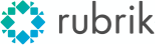
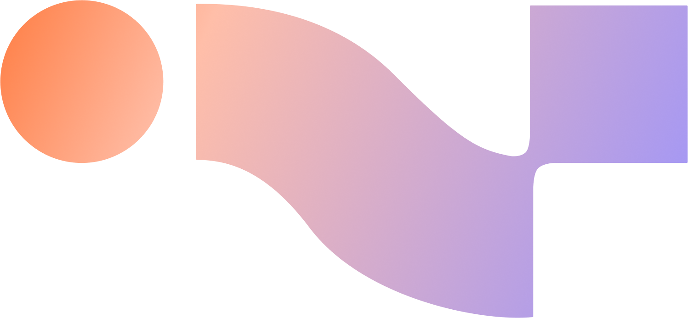

נעים להכיר — בואו נבנה ביחד 👋
מתחילים עם Claude Desktop app






שלוש דרכים — נכיר אחת-אחת
אותו עוזר — שלושה מצבי עבודה. ההבדל הוא מה אתם רוצים: תשובה, לעשות עבודה, או לבנות כלי. בשקפים הבאים נראה כל אחת לעומק, עם דוגמה מ-Whalo.
Chat — לשאול ולחקור
אינטראקציות קצרות: שאלה, מחקר זריז, סיעור מוחות וליטוש רעיון. התשובה נשארת בצ'אט — מהיר ובלי התחייבות.
- לשאול, לסכם, להשוות, להתייעץ — מומחה שזמין תמיד
- מחקר זריז וסיעור מוחות לפני שמתחילים לעבוד
- הכי טוב כש"רוצים תשובה" — לא כש"רוצים שמשהו ייעשה"
Cowork — לעשות את העבודה
לא רק לשאול על מסמך — לעבוד עליו: ליצור, לערוך ולנתח קבצים. כאן Claude מרגיש כמו עוזר, לא צ'אטבוט.
- לנסח, לעצב ולשכתב מסמכים וטיוטות
- לנתח טבלאות, CSV ודוחות — ולהוציא תובנה
- דוגמה: בריף משחק → 4 וריאציות קופי לחנות
Code — לבנות כלים
הרמה המתקדמת: לבנות אפליקציות וכלים, להריץ על הקבצים שלכם, ולאוטמט תהליכים חוזרים — בלי לכתוב שורת קוד.
- לבנות כלי שלם מתיאור במילים
- להריץ על תיקיות וקבצים אמיתיים
- דוגמה: מסנן קו"ח שמדרג מועמדים לפי rubric
Cowork מול Code — ההבדל האמיתי
שניהם סוכנים (agentic) על אותו מודל ואותו מנוע — שניהם עושים משימות מרובות-שלבים, מתחברים למקורות ומתזמנים. ההבדל הוא תחום העבודה, לא "מה אפשרי".
"נתח את תוצאות ה-A/B pricing"
אותו CSV, אותו צורך — אבל כל כלי ניגש אליו אחרת. ככה רואים את ההבדל הכי בבירור.
pricing-summary) + אפליקציית דשבורד, שומרים ל-git, ומחברים ל-Mixpanel. כל הצוות מריץ אותו על כל ניסוי — אותו ניתוח מדויק, כל פעם.אז מתי כל אחד?
אותו מודל, אותו מנוע — רק חוויה ותחום שונים. בוחרים לפי מה שצריך עכשיו.
💡 מתחילים מ-Cowork (קל ובטוח), ומשדרגים ל-Claude Code כשרוצים יותר כוח, דיוק ושליטה. (לפי Anthropic — Cowork הוא "הכוח של Claude Code, לעבודת ידע".)
מה תיקחו מהיום הזה
💬 צ'אט מול קוד
תלמדו להכיר את Claude צ'אט (Desktop) מול Claude Code — ומתי להשתמש בכל אחד.
כלל אצבע: רוצים תשובה? צ'אט. רוצים שמשהו ייבנה? Code.
⚡ Skill משלכם
"מתכון" שמלמד את Claude לעשות משימה חוזרת בשבילכם — פעם אחת מגדירים, ואז זה זמין שוב ושוב.
וזה נשמר אצלכם — בפעם הבאה פשוט מבקשים אותו, בלי להסביר מחדש.
וגם — ביטחון להמשיך לבד, ומאגר רעיונות מותאם לתפקיד שלכם.
שלוש דרכים להרחיב את Claude
ראינו איך עובדים עם Claude. עכשיו נהפוך אותו לשלכם — ללמד אותו, לחבר אותו למקורות שלכם, ולהוסיף לו כלים מוכנים.
- מתי: משימות שחוזרות באותו פורמט — קו״ח, קופי, דוחות.
- נשמר בקובץ SKILL.md ונטען אוטומטית כשהמשימה רלוונטית.
- נכנס ל-git — כל הצוות מקבל את אותו הסקיל.
- Claude קורא וכותב ישר מהמקור — בלי העתק-הדבק.
- מתחברים פעם אחת בהגדרות, וזה זמין תמיד.
- דוגמה: למשוך בריף מ-Drive, לכתוב סיכום ל-Notion.
- חבילות מוכנות של Skills + Connectors ביחד.
- מתקינים מ-marketplace — בלי הגדרה ידנית.
- הדרך המהירה להתחיל — בלי לבנות מאפס.
היכרות עם Claude Skills
תלמדו את קלוד לעבוד בדיוק כמוכם — פעם אחת. מהרגע הזה, הוא יודע.
כל שיחה מתחילה מאפס.
קלוד מבריק — אבל לא זוכר מי אתם, איך אתם עובדים, מה ה-voice של המוצר ומה כללי הכתיבה בצוות. כל בקשה דורשת להסביר הכל מחדש.
סקיל = לאמן עובד חדש. פעם אחת.
פרומפט הוא בקשה. סקיל הוא זיכרון.
בכל הסקילים שתפגשו — יש רק שני סוגים.
מתחילים מ-Context — פשוט ומיידי. משדרגים ל-Action כשרוצים שהסקיל גם יבצע: יעדכן Figma, יריץ קוד, יחבר API.
שני סוגי Skills — ההגדרה
| Context Skill · פשוט | Action Skill · מורכב | |
|---|---|---|
| מה זה | נותן ל-Claude ידע על הפורמט שלך — טון, מבנה, rubric, תבנית | גם מבצע — מתחבר למקור אמיתי, קורא וכותב דרך MCP |
| קלט | טקסט/קבצים שמדביקים בשיחה | מקור חי: Drive · Notion · Slack · Mixpanel · web |
| פלט | תוצר מובנה בפורמט קבוע | תוצר + פעולה (כותב חזרה, מסנכרן, מתזמן) |
| רץ ב | כל פלטפורמה (Chat / Desktop) | בעיקר Claude Code + connectors |
| מתי | מתחילים מכאן — מיידי, ידע טהור | משדרגים לכאן כשרוצים שהסקיל יפעל |
הכלל: מתחילים מ-Context (פשוט, מיידי), ומשדרגים ל-Action כשרוצים שהסקיל גם יעדכן Figma, ימשוך מ-Mixpanel, יכתוב ל-Notion או ירוץ מתוזמן.
תיקייה עם קובץ אחד חובה. השאר אופציונלי.
references/ ו-scripts/ נטענים רק כשצריך. שמרו עליהם קצרים..py/.js/.sh רץ באמת ב-Claude Code — להוצאת עבודה דטרמיניסטית מה-LLM.סקיל עם ידיים — Figma MCP.
apply-figma-fixes.js מעדכן את ה-copy ישירות במסך דרך ה-MCP.ה-Knowledge הוא שלכם — אבל לא צריך לכתוב אותו
המהות היא הידע הייחודי שלכם. אתם מביאים אותו — ו-Claude מנסח אותו ל-Skill. שלוש דרכים:
מה חייבים להביא: הטון, ה-rubric, ה-style guide, המדיניות שלכם · מה Claude כבר יודע: מגבלות החנויות, נוסחאות, ידע כללי.
מתי לבנות Skill — ומתי לא.
לא כל משימה ראויה ל-Skill. הכלל: אם עשיתם אותה שלוש פעמים — הגיע הזמן לתעד.
- המשימה חוזרת על עצמה ברוב הפרויקטים
- יש voice/טון קבוע שכותבים בו שוב ושוב
- הסבר הדרישות לוקח יותר זמן מהביצוע
- רוצים שהתוצר ייראה זהה גם בין חברי הצוות
- זו משימה חד-פעמית או מחקרית
- הדרישות משתנות בין בקשה לבקשה
- מספיק prompt קצר בשיחה הנוכחית
- אין עדיין דוגמת פלט שאתם מרוצים ממנה
שתי דרכים. שתיהן עובדות.
לא כותבים סקיל. בונים אותו.
/feature-brief.סקיל טוב לא נכתב — הוא מתגלה. הכללה של דפוסים שכבר עבדו לכם.
מה נכנס לכל סקיל שאני בונה?
שישה מרכיבים — המתכון מאחורי כל סקיל. לא חובה את כולם, אבל ככה אני בונה.
קלוד בונה את הסקיל איתכם — שאלה-שאלה.
שלושה קטלוגים שכדאי להכיר.
חשוב: לפני שמתקינים סקיל מבחוץ — קוראים את ה-SKILL.md שלו.
פרויקט אחד — או כל המחשב.
מריצים את Claude Code בטרמינל — אז יש שני מקומות שהסקיל יכול לגור בהם. הבחירה משנה מתי הוא נדלק.
claude משם. נכנס ל-git — כל הצוות מקבל אותו אוטומטית.12 Skills לפרויקטים שלכם
לכל צוות — סקיל Context וסקיל Action. לחצו על סקיל כדי לראות פירוט והפרומפט ליצירה.
סקיל הוא ההבדל בין AI שעונה
ל-AI שעובד בשבילכם.
שלושה צעדים שתעשו — כבר השבוע.
MCP & Plugins
Skills קיבל פרק שלם — אלה שני הרכיבים הנוספים שמרחיבים את Claude: הפרוטוקול שמחבר אותו לעולם, והאריזה שהופכת חיבור למותקן-בלחיצה.
בונים — באמת
עד עכשיו רק טעמנו. עכשיו ~שעתיים שבהן אתם בונים, ואנחנו מסתובבים לעזור לכל מי שנתקע.
דברים להתחיל מחר בבוקר
• סיכום אוטומטי של פגישות
• בריף בוקר מכל המקורות
• הפיכת דוחות ל-PDF מעוצב
• ניסוח חוזר של מיילים נפוצים
• מסנן / מדרג מסמכים
• מחקר מתחרים מהיר
• טבלאות וניתוח מתוך אקסל
• כלי קטן לכל תהליך ידני חוזר
הפרויקטים שבנינו
6 פרויקטים לדוגמה — אחד לכל צוות. כל אחד יושב בתיקייה אמיתית עם דאטה, ובחלקם כבר בנינו את ה-Skills.
✓ = כבר בנוי בתיקייה (SKILL.md + references) · השאר מוכנים לבנייה בסדנה · Context = ידע · Action = עם MCP
כל החומרים במקום אחד
כל מה שבנינו בסדנה — לחיצה נפתחת ישירות.
📁 הקבצים המקומיים נפתחים מתיקיית הסדנה — workshop-hub.html · projects/ · cowork-vs-code-demo.md